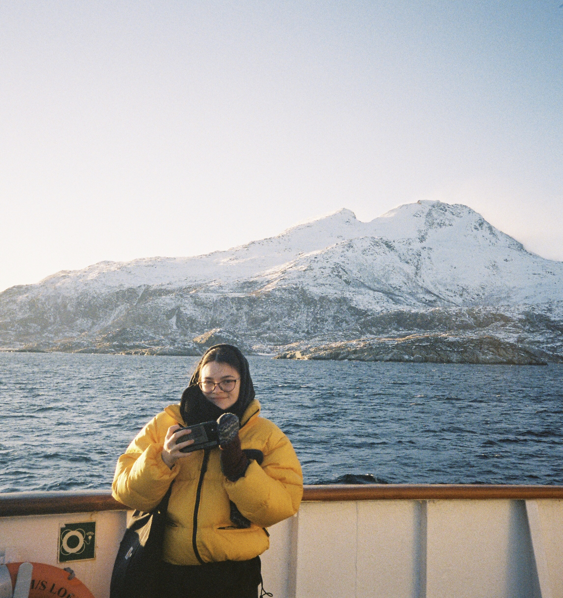

My name is Evelyn Gorey, and I'm a cartographer, reseacher, and GIS analyst.
I graduated from Temple University's Geography & Urban Studies program in December 2020 with a Bachelor of Arts and an undergraduate GIS certificate.
Through my academic research and prior work experience, I've developed a passion for using GIS to inform environmental justice, health justice, and conservation decisions and to convey spatial information to diverse audiences in engaging ways.
I am particularly interested in finding ways to use remote sensing techniques to monitor the health of forests and identify key drivers of deforestation throughout the world.

I currently work as a Research & Data Associate for Philadelphia Department of Public Health (PDPH). In this role, I 1) conduct spatial and statistical analyses to identify trends in firearm violence across the city, 2) disseminate my team's work through public reports, publications, and conferences, 3) maintain external partners' data to contribute to a citywide firearm victim dataset, 4) and help design and manage an official City web map pointing Philadelphia residents and service providers to injury prevention resources throughout the city.
I also work as a remote sensing research assistant at the Temple University Spatial Analytics Lab (SALT), where I use remote sensing techniques to analyze land cover changes and key drivers of biodiversity loss in northern Colombia. My project's focus is to analyze and quantify deforestation that is specifically attributed to oil palm expansion.
In summer 2021-spring 2022, I worked as a GIS Technician for Philadelphia Parks & Recreation (PPR). In this role, I created, helped maintain, and edited data in our geodatabases; I mapped our properties and other important infrastructure for other City departments; I designed web applications to help our end users view and edit their data that we maintain; and I automated common workflows using Python.
In the spring of 2021, I worked as an urban forestry GIS intern for the Pennsylvania Horticultural Society (PHS) and Philadelphia Parks & Rec; in this role, I conducted an urban tree canopy prioritization analysis for the City of Philadelphia to aid strategies developed under the Philadelphia Urban Forest Strategic Plan. The resulting map highlighted Philadelphia streets that are 1) most in need and 2) have the most capacity for additional street tree plantings.
In the summer of 2020, I was one of the GIS Summer of Maps Fellows at Azavea. I served as project manager, GIS analyst, and cartographer for two non-profit projects, and I also presented the results of my findings at the end of the summer through presentations, blog posts, and a remote GIS conference hosted by Azavea. The goals of the projects were 1) to highlight Philadelphia streets within the Hunting Park neighborhood that were the most in need of additional tree canopy and 2) to identify areas along the existing and proposed U.S.-Mexico border wall that have the highest numbers of at-risk species. Read more about these two projects in the Home section.
My other past roles include a Geospatial Stylization Consultant at NRECA International, the GIS Analyst Intern at Temple University's Facilities Information Resources & Management (FIRM) office, and the GIS Research Assistant at Temple University Ambler Campus.